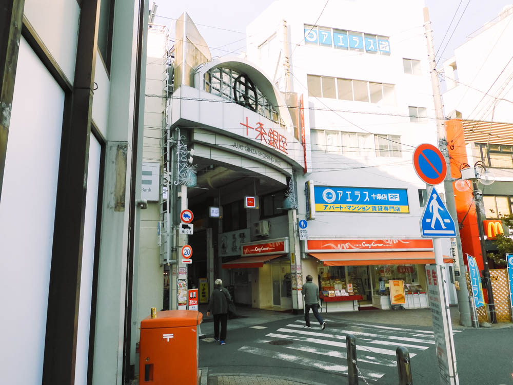
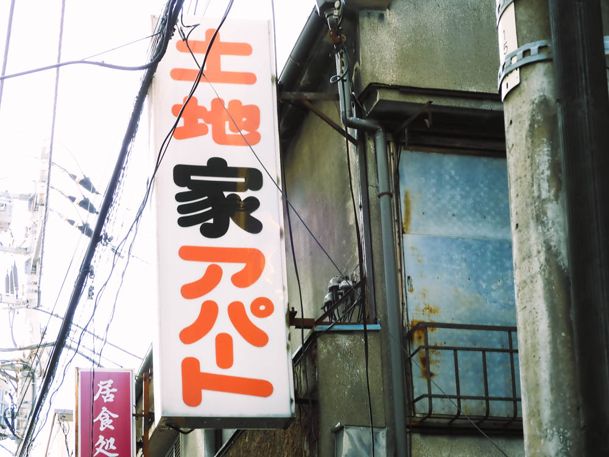
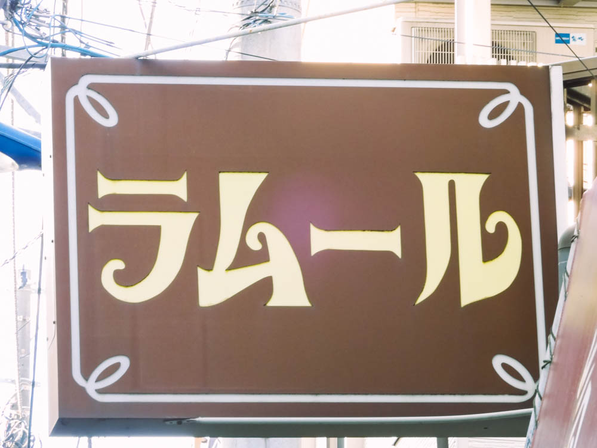
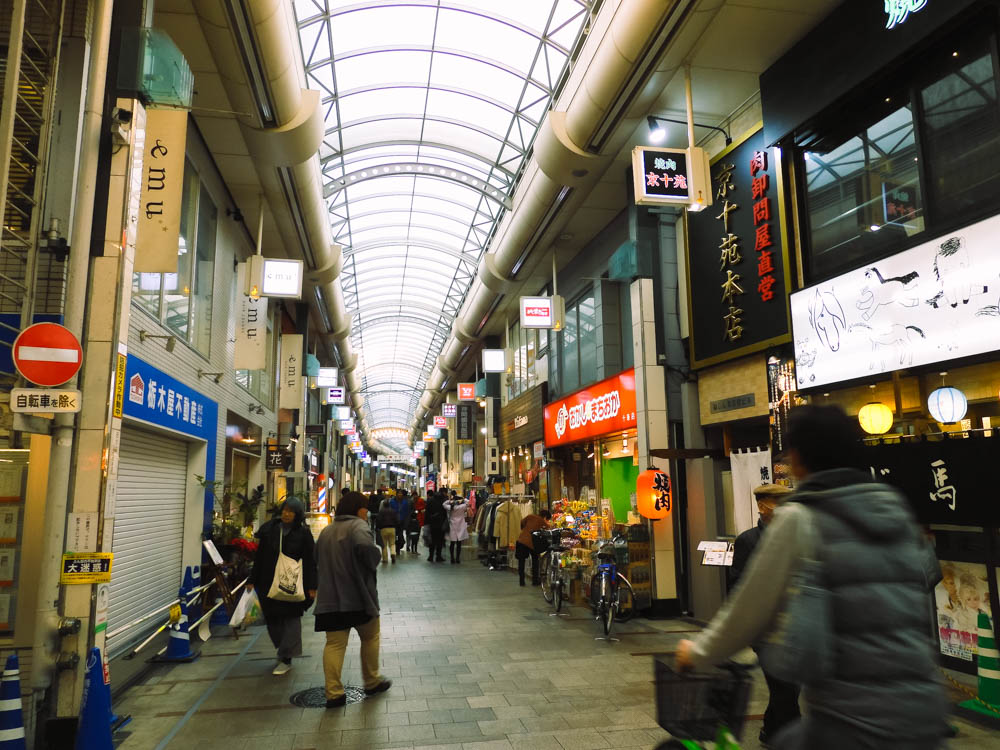
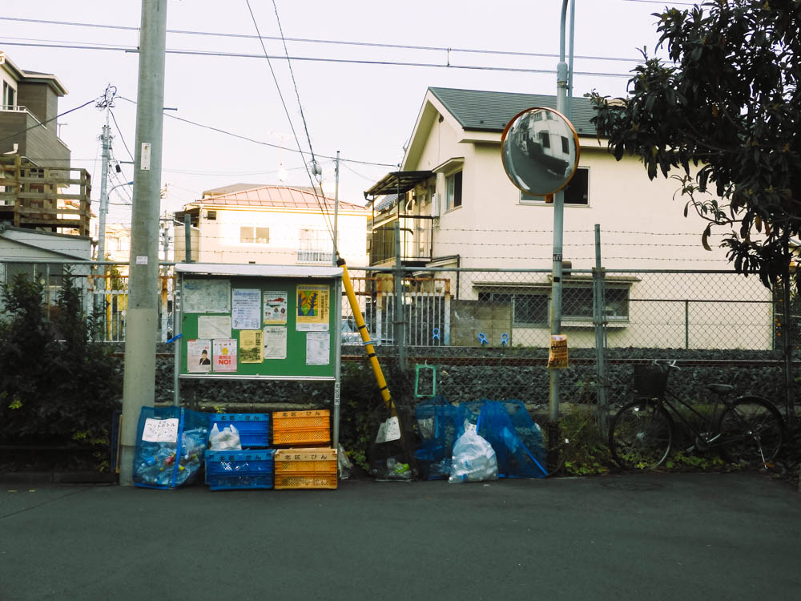
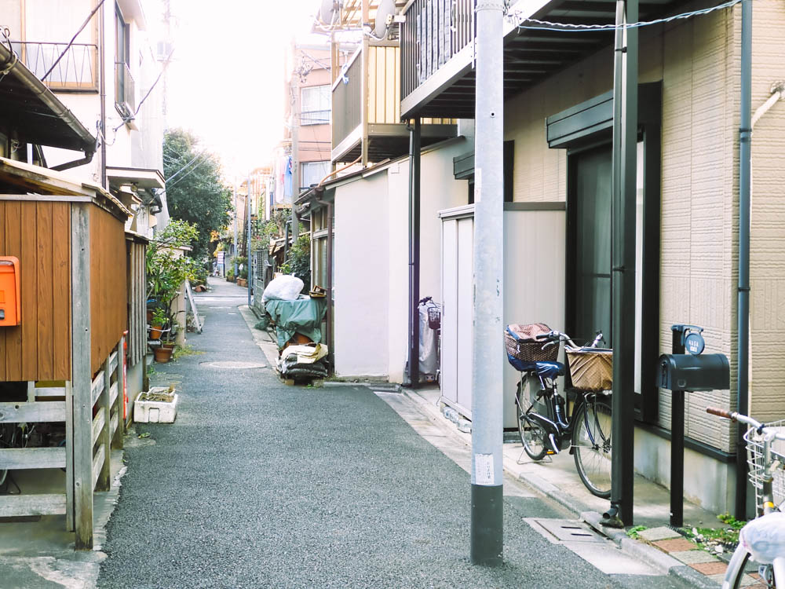
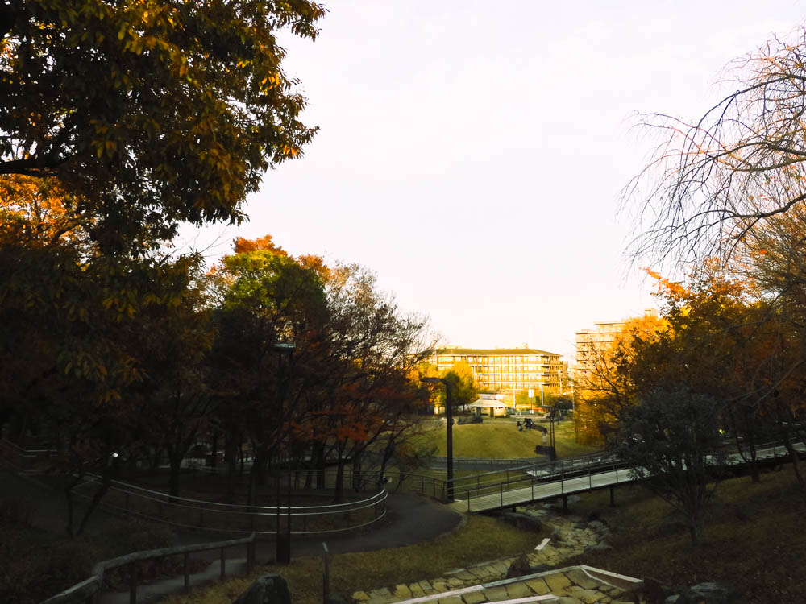
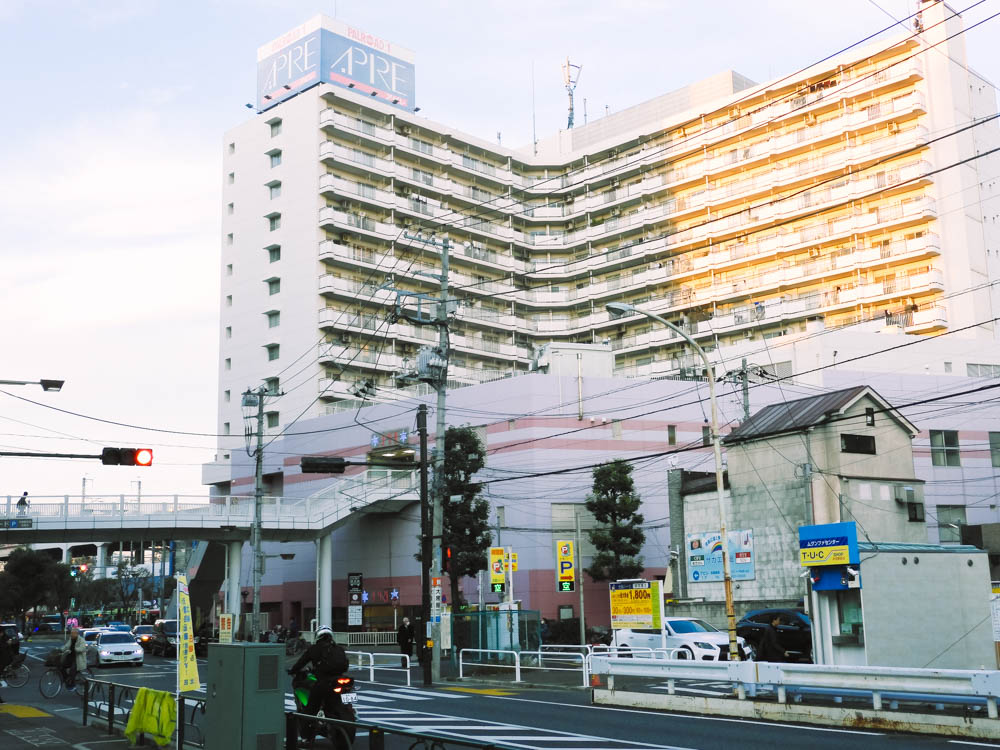

赤羽
十条から赤羽を散策してきた。
2020年1月の中旬くらいに十条から赤羽を散策してきた。
Google Mapで調べたら2Kmだったが意外と距離があるんだな。
想像通りにレトロな看板が目立つ街で、「野良フォント」を撮ろうと試みたが途中でやめてしまった。
何だか中途半端な写真になりそうだったし。
歩いていてもほのぼのとする良い街並。笹塚とかあのあたりに似ている雰囲気かな。じゃあ笹塚を歩けよって思うけど若干違うんだな。
このあたりの街並はやはり好きだ。上京してきたことをよく思い出す。
そして赤羽で初めてタピオカを食べたのもよい思い出。











